AWS Overview
什么是AWS？
AWS是Amazon的云服务，我现在用到的是其中的API Gateway和Lambda，API Gateway就是API网关，当网关收到request时，可以运行对应的Lambda function，生成response，然后返回。
Part1: Lambda function and API Gateway
- Introduction
- 创建AWS Serverless Application
- 更改API域名 Custom Domain Names
- change lambda function outbound IP address to static
Part2: 使用IAM保护API
Part3: Use S3 to host webpage
Part4: AWS Simple Email Services
Part1: Lambda function and API Gateway
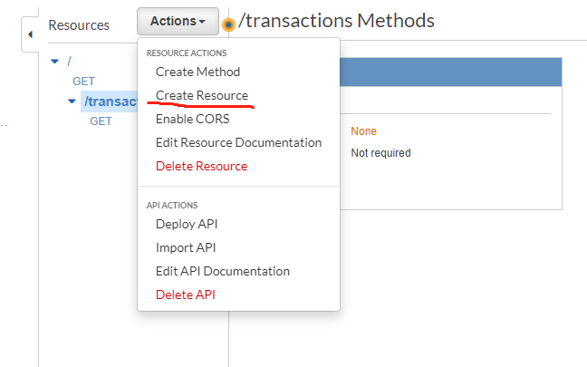 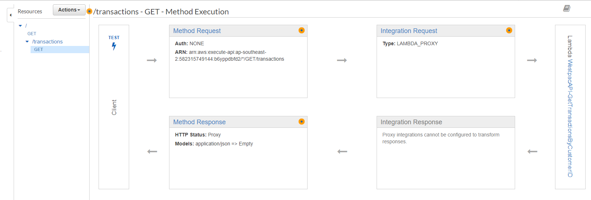API Gateway
他总共分成6个部分，第一个部分是Test，也就是send test request的地方，sample request会先到达Method Request，在这里你可以往request里面加入Query string parameters, Http headers, Request body来让request符合Lambda的要求。
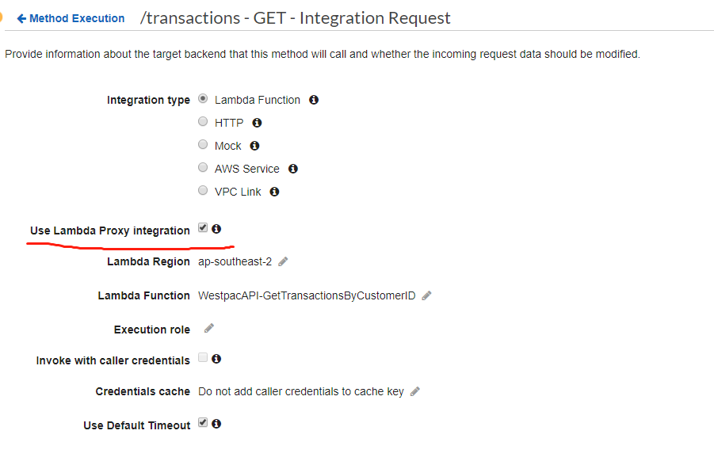再下一个部分是Integration Request，在这里可以选择对应的Lambda function，让request知道该去往哪个Lambda，并且可以勾选Use Lambda Proxy integration, 如果勾选，它代表着AWS会帮你把request中的信息(包括query parameter, header, body等)保存到一个类似Dictionary的结构中，在lambda里面可以直接通过key name调用，不用手动提取信息。在下一部分就是运行相应的Lambda function了，这个在接下来的Lambda部分中讲。当Lambda运行完之后会生成一个response，如果勾选了之前的Proxy integration，这个地方就是灰色的，不能查看，因为它会帮你把response里的信息自动填充到header，body。。。并且使用自带的response template model，所以你就不用操心这个了。不然的话你可以手动设置response的格式。最后一个部分是Method response，当设置好reponse格式之后，你可以把response status code，连同optional的header和body返回给用户。还可以设置body的格式，比如JSON。
Lambda function
这里是你真正处理请求并返回数据的地方，AWS支持很多种语言的function。
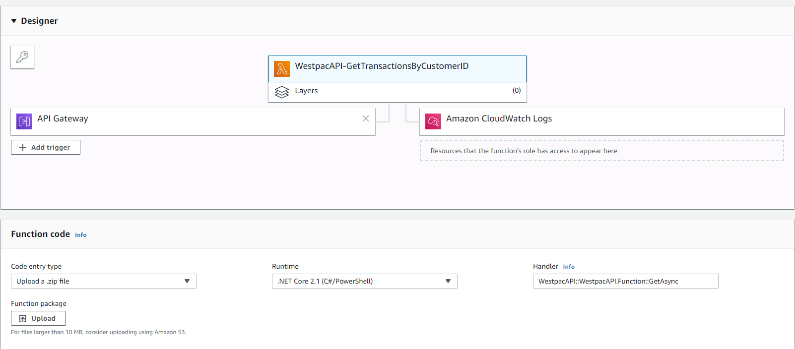 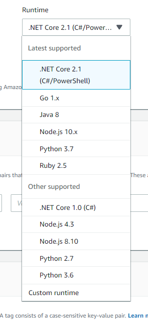我是用C#，这需要在Visual Studio中安装AWS package，在unget manager里面搜索AWS就可以找到AWS SDK了。安装之后就可以新建AWS solution并publish到AWS Lambda中。
这次我需要写的function就是调用Westpac API，所以其实是用户先调用AWS API，然后这个API再调用Westpac API。。。
如果request中含有parameter或者body信息，那么在function中的APIGatewayProxyRequest中就会含有这些参数信息，这就是之前勾选了proxy integration的好处
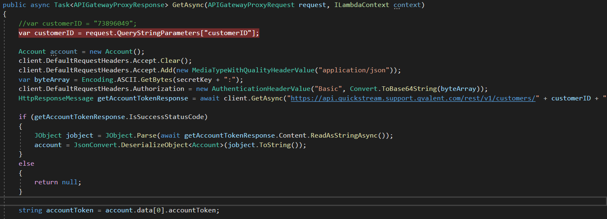 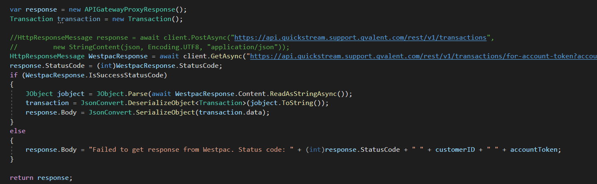在上传时新建一个Lambda function，另外下面的Method name要对应刚刚C#中的method name，因为有时候我们会在一个solution中写多个method，连接多个Lambda function，所以要一一对应。
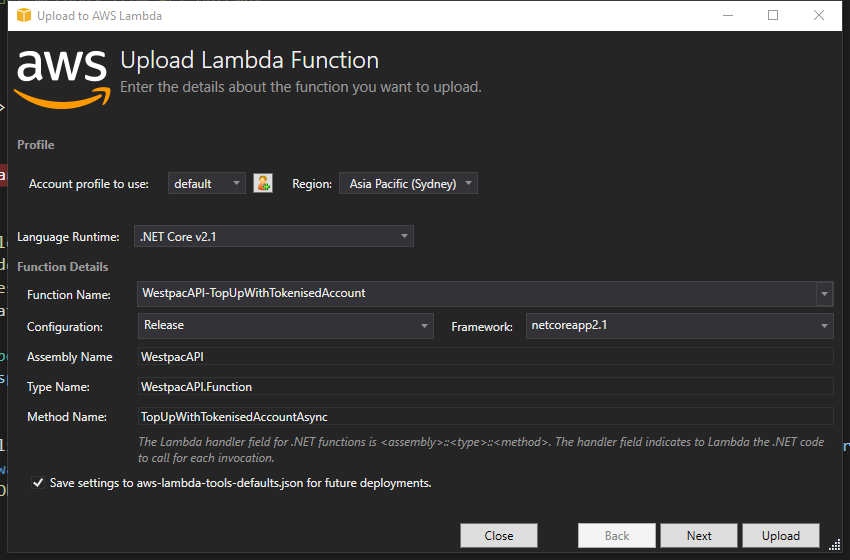Test API Gateway and Lambda function
之后就是用AWS测试刚刚写好的API了，注意测试之前要先deploy API Gateway，确保与Lambda function对应，这个可以在lambda function中的API Gateway endpoint里看到，如果能看到endpoint url，就说明对应成功了。
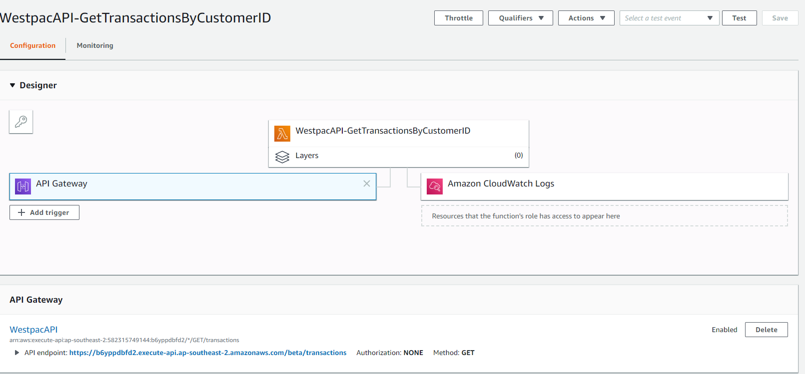测试的时候可以加query strings，就是request中的parameters，右边可以看到测试结果，因为这个是GET request，所以我们不能加Request Body。在POST request中是可以的。
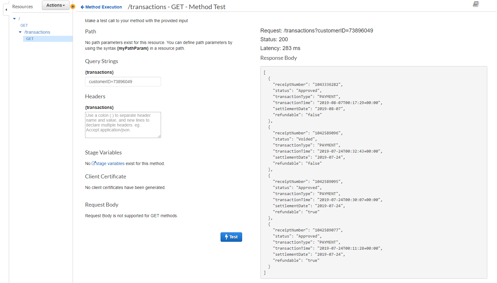这个是另外一个POST request with JSON body
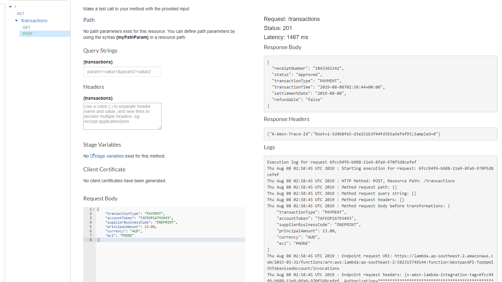创建AWS Serverless Application
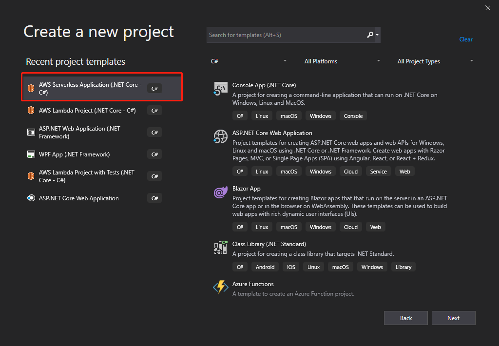这更像是一个Lambda project，可以让API gateway一次连接多个Lambda functions，也可以在Visual Studio里调整API Gateway的一些设置
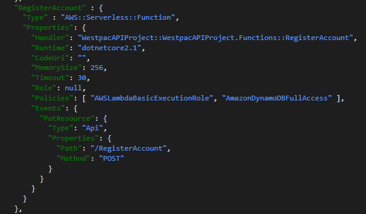这是project包含的template文件，我们可以设置API的类型，Request的类型，路径，以及这个API对AWS的可操作权限等
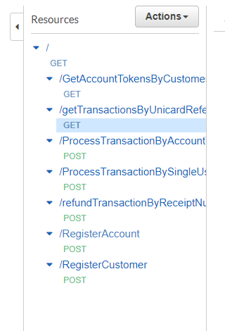发布后在API Gateway中就可以看到这个层级结构和template是完全一样的
之前讲到我们可以在API Gateway中测试API，其实在Visual Studio里，发布之前我们就可以debug他，就是debug所在的位置，只不过现在显示的是Mock test tool
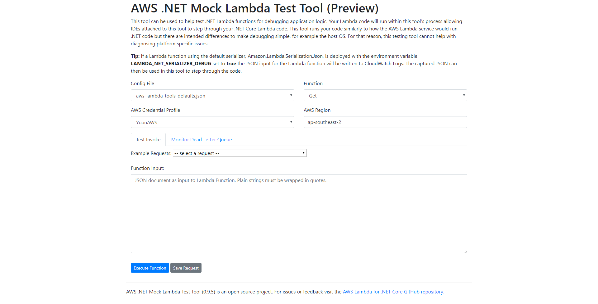他长这个样子
其中有两个需要注意的地方，第一个是我们需要调用的function，因为这是一个lambda projects，包含多个lambda functions，所以调用哪一个必须提前声明
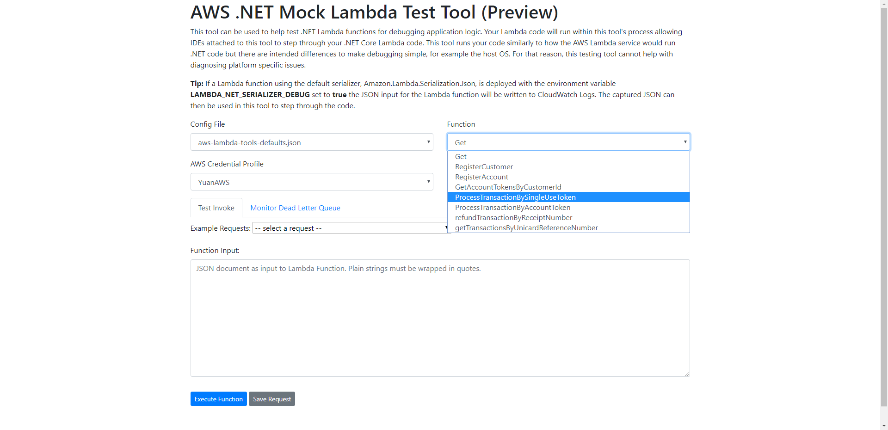还有一个就是input，因为我使用的proxy，所以在列表中选择proxy，会生成一个template，然后我们需要什么input就在相应的地方加就可以了
比如如果要在request body里加，就找到body所在的位置，query parameter和path parameter同理
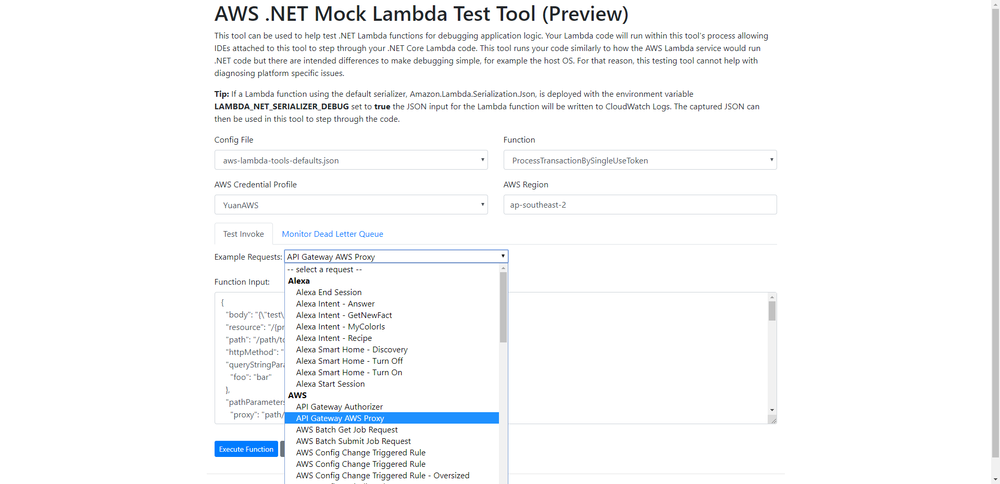最后说一下如何发布，跟之前的lambda function一样，只不过我们需要创建一个S3 bucket来存放所有的历史版本。
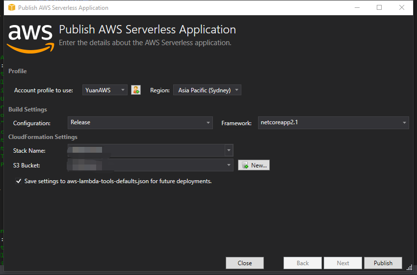他会自动清理之前旧版的project，当状态显示的是update complete，我们就知道他已经可以使用了
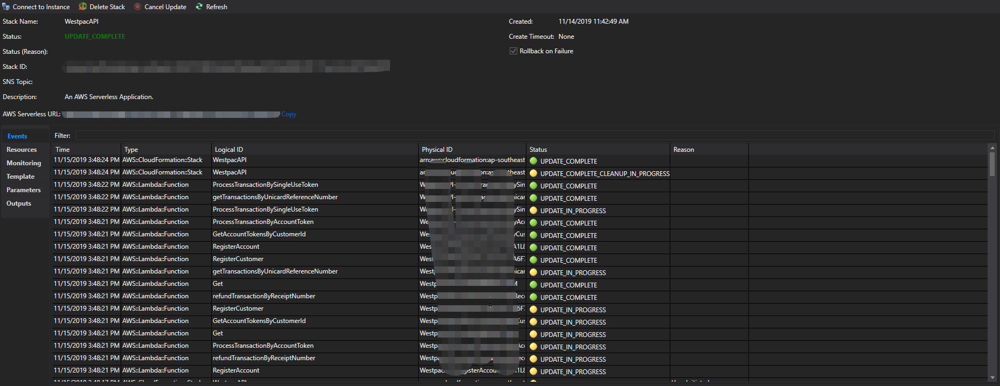Calling trusted frame from swift
另外一个任务是，因为我们不能经受任何信用卡信息，所以我们需要用到westpac trusted frame，通过调用这个Javascript library来让用户将信用卡信息直接发送到westpac的服务器，然后处理westpac的response就可以了。但是有一个问题是，我们希望用户能在我们的手机app上也可以调用westpac API，可以这个trusted frame是一个只支持web application的Javascript library，这就需要我们在Swift中加入WebKit，同时在用户在含有trusted frame的web page中submit form时，将返回的信息发送到Swift的某个Method中。简而言之，我们需要在javascript中调用Swift
更改API域名 Custom Domain Names
AWS API的标准名字是这样的格式 https://api-id.execute-api.region.amazonaws.com/stage 这很复杂而且跟API的功能也没有任何联系
我们可以更改他的域名，让他的名字更有意义
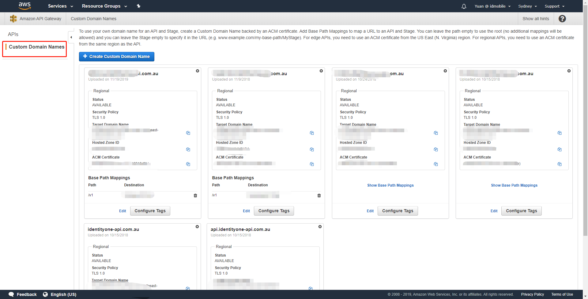在新建域名时，我们可以给域名增加certificate，这需要通过在AWS ACM(certificate manager)中新增certificate来实现
我们还需要在internet中新建一个我们想要的域名，然后用route 53来把这个域名和API关联起来，上图中的Target domain name就是自定义域名需要关联的域名。在route 53中找到hosted zones，然后新增一行record，把target domain name填入，再自定义一个域名就可以了
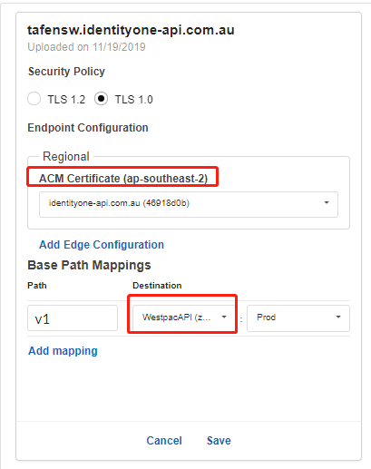AWS API分为两种，一种是Edge Optimized，另一个是Regional，在API Gateway中每一个API的settings中可以看到，也可以更改其Endpoint type
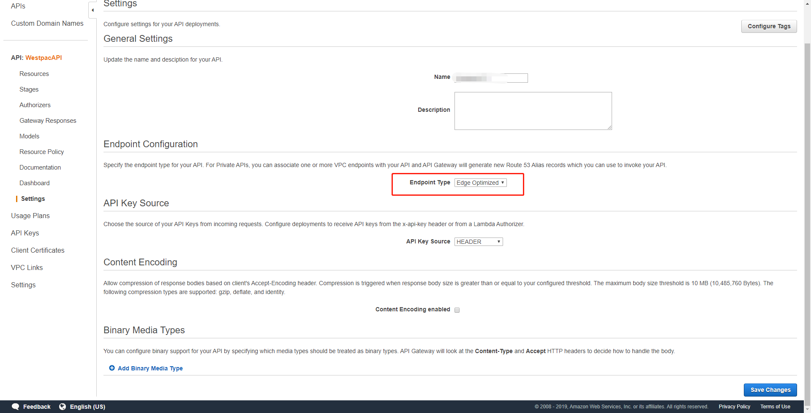最后测试一下看看域名是不是成功了，记住route 53需要一点时间才能把域名建好并且go live，所以等几分钟再试
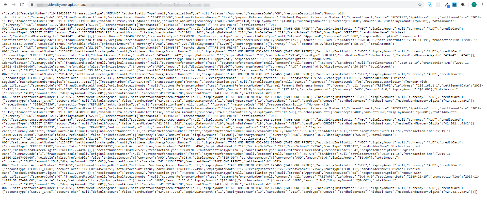本节参考了这些文章，可以点击以获取更多信息。
- Set Up a Custom Domain Name for an API in API Gateway
- How to Create an Edge-Optimized Custom Domain Name
change lambda function outbound IP address to static
我们还可以设置API outbound request的IP，有些时候，当我们需要调用外部API时，他们会有IP地址的限制，只有来自特定whitelist的IP地址发送的请求才会被接受。所以我们需要设置我们发送API时请求的IP地址。因为Lambda function是通过AWS发送的，在被发送时它的IP地址是随机的，虽然不是动态IP，但是每次发送的地址都不一样，我们没办法把所有的IP都加近whitelist。
针对这个问题，我们可以通过把lambda function加入VPC来解决，VPC可以看作是包含一组IP地址的内部云，我们给它加上一个出口，让所有在此VPC的请求都通过这个出口发送出去，这样所有的lambda都会只有一个我们指定的IP了。
我们具体来解释一下AWS VPC的构造
如果AWS EC2是一个云服务器，那么VPC就是这个云服务器的网络层，负责设备之间的信息传输。它由几个重要部分构成
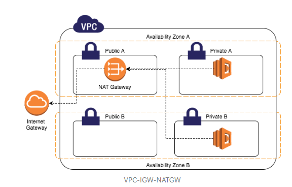- Subnet: 包含一组指定范围的IP，IP格式参照CIDR
- Route table: 包含信息传输的规则，什么地方来的请求应该到什么地方去，类似一个交通枢纽，负责指挥数据的方向
- Internet gateway: VPC的一个重要组成部分，负责VPC内部信息和外部网络的交流，就是这个VPC的出口
- Elastic IP: 一个公开的IPv4地址，我们要把它赋给NAT，这样就可以让外部和NAT内部通过这个公开IP进行交流
- NAT Gateway: Network Address Translator Gateway, 与Internet Gateway类似，不同的是它可以让private subnet中的数据通过它与外部网络交流
具体做法
- 新建一个VPC
- 新建一个Internet Gateway，与VPC相连
- 新建一个Public subnet，并在route table中新建一个规则，让所有通过这个public subnet的数据流向Internet Gateway
- 新建一个Elastic IP
- 新建一个NAT Gateway，把Elastic IP赋给它，并将它放入public subnet中
- 新建一个private subnet，并在route table中新建一个规则，让所有通过这个private subnet的数据流向NAT Gateway
- 将lambda function放入private subnet
这样一切就设置完成了，当lambda被执行时，数据会通过private subnet，根据route table的规则流向NAT gateway
NAT Gateway将数据赋予Elastic IP，因为NAT在public subnet中，根据route table规则流向Internet Gateway
Internet Gateway将数据发给外部网络，此时所有数据都会来自同一个Elastic IP
需要注意的点
在将lambda function放入subnet时，只给它private subnet，不要给public subnet，因为这样他就有可能不通过NAT gateway
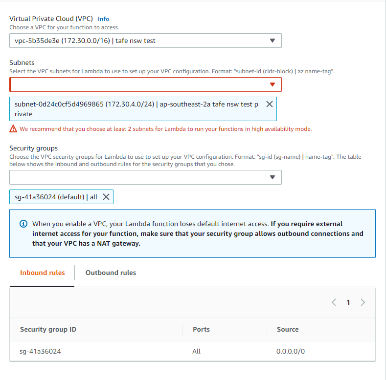给lambda function加VPC需要一个AWS permission
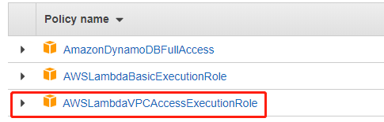可以创建另一个lambda function，只接受特定IP来测试整个流程是否成功。图为限制IP的policy
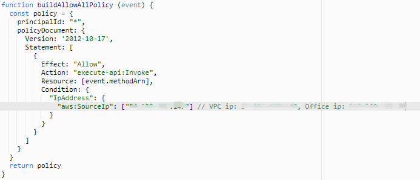本节参考了这些文章，可以点击以获取更多信息。
- AWS Lambda functions with a static IP
- Configuring a Lambda Function to Access Resources in a VPC
- AWS — Difference between Internet gateway and NAT gateway
- What Is Amazon VPC?
- What Is Amazon EC2?
- Elastic IP Addresses
Part2: 给API增加Authentication
HTTP basic authentication是一种保护API免受外界攻击的方式，当我们尝试打开某些URL时，有时会出现这个界面让我们输入用户名和密码，这就是一种Basic authentication
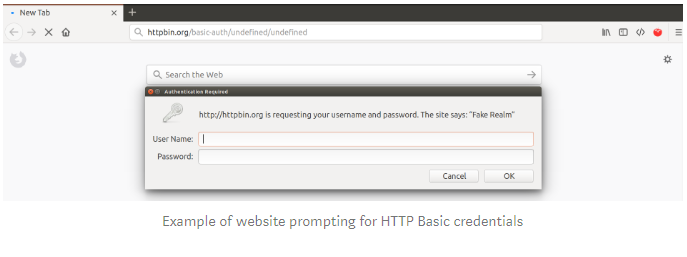这种机制依赖于HTTP Authentication Framework，他的步骤是：
- 某些人尝试访问一个受保护的URL
- 服务器返回401未授权的HTTP code，包括一个WWW-Authenticate header with value Basic
- 浏览器弹出要求用户输入用户名和密码的窗口
- 请求再次被发送，包括用户输入的授权信息在header中
那么这个简单的API authentication怎么实现呢？
首先我们去到已经建好的API Gateway中，点击Gateway responses选项，选中Unauthorized，在这里我们可以设置返回什么样的信息给用户当他们尝试访问这个URL时。
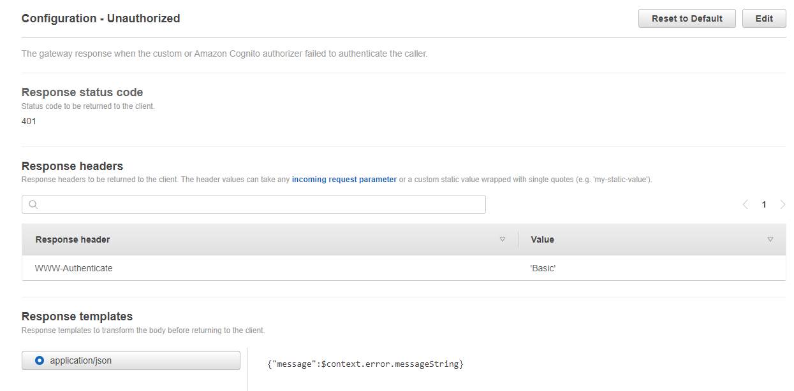当我们添加了WWW-Authenticate header，浏览器就会弹出窗口要求用户自证身份
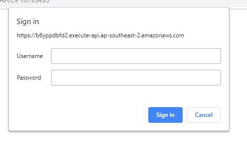之后我们需要写一个Lambda function去检查用户提交的信息是否是正确的，也就是检查用户名和密码。这个function也叫做custom authorizer
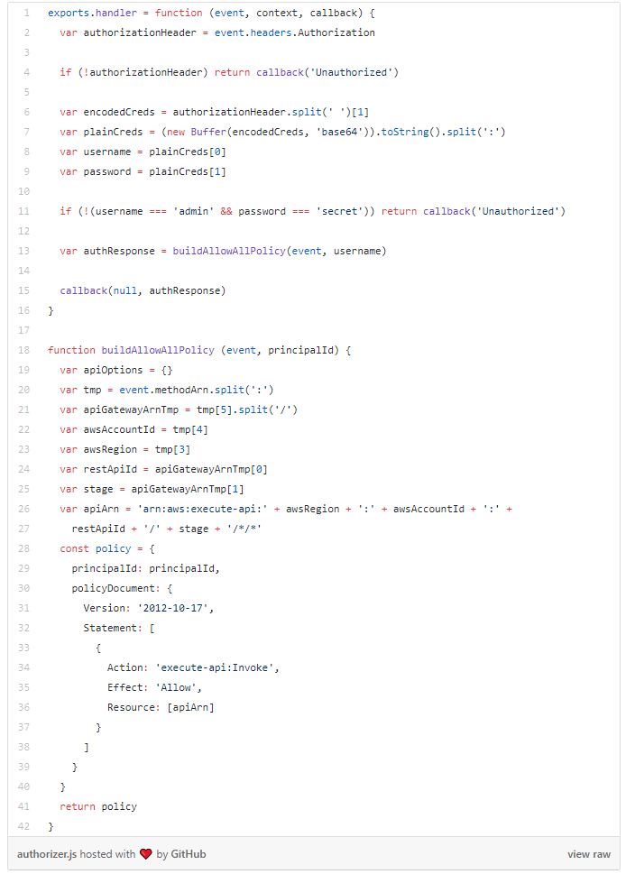接下来我们需要让我们的API知道当他接收到Authentication信息时需要调用哪个lambda function来检查，所以去到API gateway的Authorizer选项，新建一个Authorizer，在lambda function中选中我们刚刚写好的lambda function
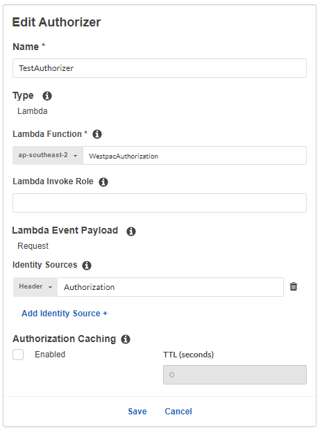最后我们还需要让API gateway知道哪个URL endpoint是需要保护的，因为一个API gatewat往往包括很多个URL，我们需要指定一个或多个URL调用刚刚新建的Authorizer
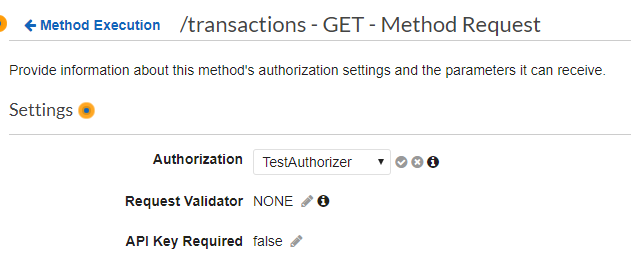最后别忘了Deploye API，不然所有的设置并不会生效
我们可以测试一下看看访问相同的URL，如果不添加authentication information的话，服务器就会返回401 Unauthorized
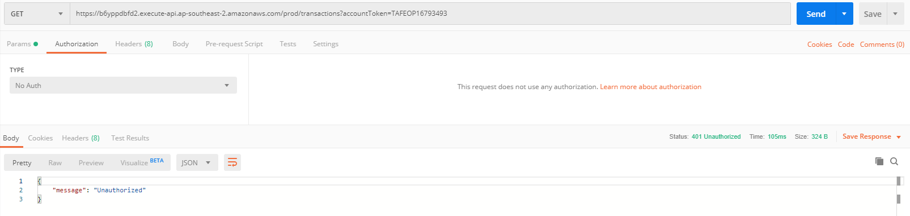除了使用自定义的Authorizer，AWS也内置有IAM (Identity Access Management),在之前的Method Request如果我们选择使用AWS_IAM的话，也可以限制用户对于API的访问
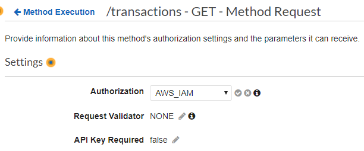但是我们必须在request中添加AWS signature，这需要使用到AWS给每个account的access key和secret key，其中secret key只有在一开始generate的时候才会看到，之后就看不到了，所以一定要保存在一个安全的地方，要不然的话只能重新generate一对新的key
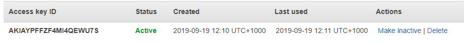 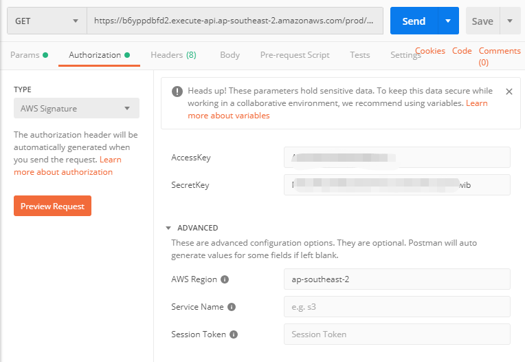另外我们可以在resource policy中限制可以访问API的ip address，所以即使用户输入了正确的Authentication information，我们也不能让没有权限的区域访问API
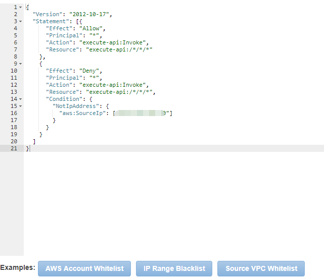这种IP address limitation也可以在自定义的lambda function中使用
另外，如果要blacklist or whitelist a range of ip addresses，可以使用CIDR notation net mask，在ip address后面加一个斜杠和一个数字，数字表示从左往右有多少bit是在范围外的。
例如“110.142.216.1/24" 就表示了ip range from 110.142.216.1 to 110.142.216.255
本节参考了这些文章，可以点击以获取更多信息。
- HTTP Basic Auth with API Gateway and Serverless
- Control access to your APIs using Amazon API Gateway resource policies
- How do I use a resource policy to whitelist certain IP addresses to access my API Gateway API?
- API Gateway Resource Policy Examples
- Classless Inter-Domain Routing
Part3: Use S3 to host webpage
S3是一个储存文件的服务，一般来说我们需要把网页放到服务器里去host它，但是S3也提供了host webpage的功能，我们只需要新建一个bucket。
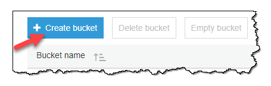上传我们需要host的webpage
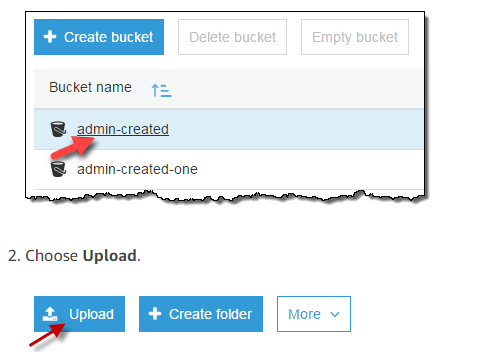注意在设置里面关闭block public access，毕竟我们需要访问它来获得数据
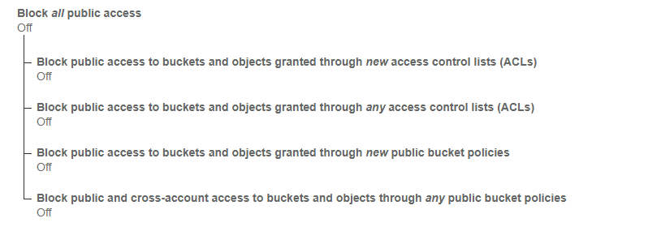最后我们需要打开hosting
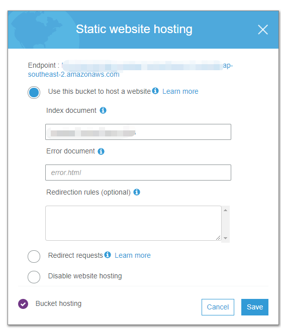这样的话我们就可以通过AWS S3来host webpage，不需要使用自己的服务器了
本节参考了这些文章，可以点击以获取更多信息。
Part4: AWS Simple Email Services
使用AWS发送Email是一件非常简单的事情，通过以下步骤可以创建一个AWS User with email sending policyies并使用C#发送邮件
首先我们需要创建一个AWS User，拿到发送Email的Credentials
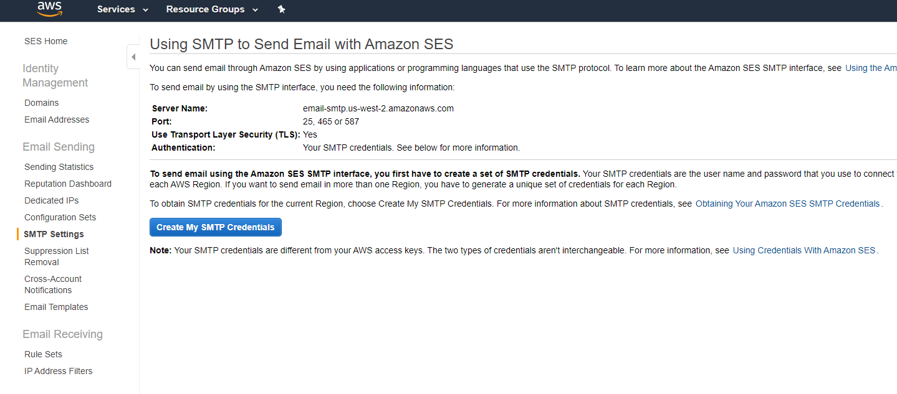然后我们需要设置想用什么邮箱地址发送邮件，我们需要验证，并登陆对应邮箱点击验证链接
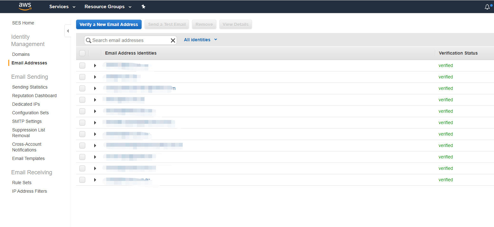之后我们可以测试一下能不能发送Test Email，这里不需要用到Credentials
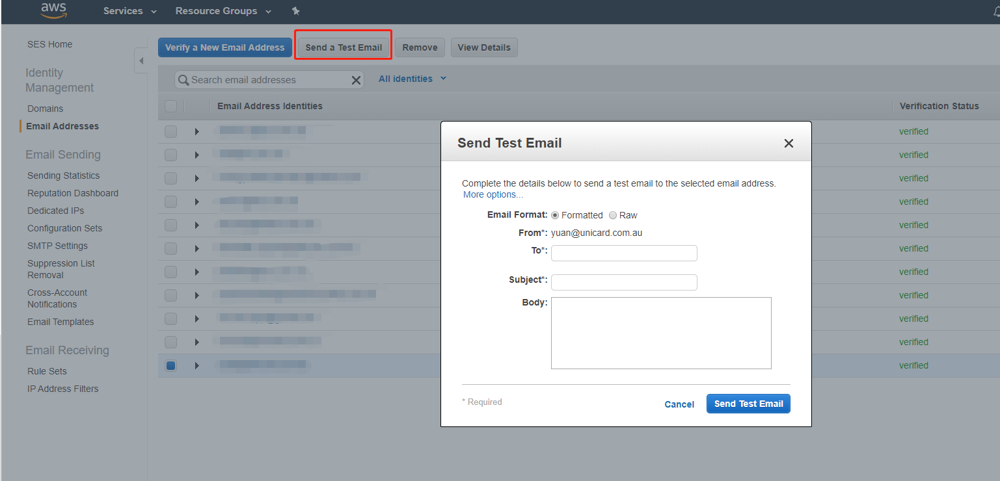然后我们就可以看代码了
public void SendEmail()
{
String FROM = "sender email address";
String FROMNAME = "Your Name";
String TO = "receiver email address";
String SMTP_USERNAME = "Credentials Username";
String SMTP_PASSWORD = "Credentials Password";
String HOST = "Your AWS host location";
int PORT = 587;
String SUBJECT = "Email Subject";
String BODY =
"<h1>Email Title</h1>" +
"<p>Email Content</p>";
MailMessage message = new MailMessage();
message.IsBodyHtml = true;
message.From = new MailAddress(FROM, FROMNAME);
message.To.Add(new MailAddress(TO));
message.Subject = SUBJECT;
message.Body = BODY;
using (var client = new System.Net.Mail.SmtpClient(HOST, PORT))
{
client.UseDefaultCredentials = false;
client.Credentials = new NetworkCredential(SMTP_USERNAME, SMTP_PASSWORD);
client.EnableSsl = true;
try
{
Console.WriteLine("Attempting to send email...");
client.Send(message);
Console.WriteLine("Email sent!");
}
catch (Exception ex)
{
Console.WriteLine("The email was not sent.");
Console.WriteLine("Error message: " + ex.Message);
}
}
}
执行这个function几次看看能不能收到邮件，如何可以的话就成功了
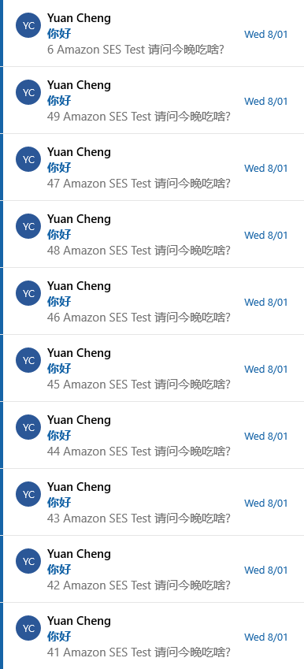AWS 还有统计邮件成功率的工具，也在SES tab里面
另外就是Configuration set是一个optional的设置，可以在AWS里面添加
除了用SMTP，我们还可以用AWS SDK发送邮件，这里就不介绍了，大致都是一样的，代码需要改一下
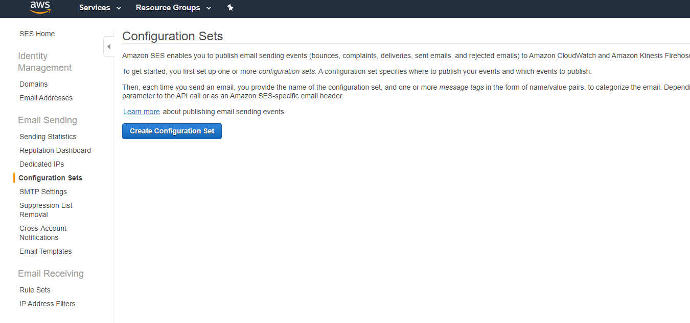当你新建一个AWS用户时，你的邮件功能可以会受到限制，也就是说在Sandbox里面，收发数量，频率都会受限，可以给Amazon发送请求移除Sandbox，具体做法可以参考下面链接
本节参考了这些文章，可以点击以获取更多信息。